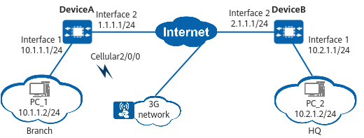

Example for Configuring a Branch to Establish an IPsec Tunnel with the HQ Through Primary and Backup Links
Networking Requirements
In Figure 1, DeviceA and DeviceB function as the gateways of the enterprise branch and HQ, respectively. The branch communicates with the HQ through the Internet and uses the 3G link as the backup link. If the primary link fails, traffic is switched to the backup link to ensure uninterrupted traffic forwarding.
The enterprise wants to protect traffic transmitted over the Internet between the branch and HQ. To meet this requirement, an IPsec tunnel needs to be established between the branch gateway and HQ gateway. To allow branch users to access the Internet, NAT needs to be deployed on DeviceA.

In this example, interface 1 and interface 2 represent 10GE 0/0/1 and 10GE 0/0/2, respectively.

Configuration Roadmap
The configuration roadmap is as follows:
- Complete basic interface configurations.
- Complete cellular-related configurations.
- Configure static routes to ensure that there are reachable routes between the HQ and branch.
- Configure NQA so that traffic can be rapidly switched to the backup link if the primary link fails.
- Configure an IPsec policy and apply it to a specific interface.
- Configure NAT to allow users to access the Internet.
Procedure
- Complete basic interface configurations on DeviceA and DeviceB.
# Complete basic interface configurations on DeviceA.
<HUAWEI> system-view [HUAWEI] sysname DeviceA [DeviceA] interface 10ge 0/0/1 [DeviceA-10GE0/0/1] ip address 10.1.1.1 255.255.255.0 [DeviceA-10GE0/0/1] quit [DeviceA] interface 10ge 0/0/2 [DeviceA-10GE0/0/2] ip address 1.1.1.1 255.255.255.0 [DeviceA-10GE0/0/2] quit
# Complete basic interface configurations on DeviceB.
<HUAWEI> system-view [HUAWEI] sysname DeviceB [DeviceB] interface 10ge 0/0/2 [DeviceB-10GE0/0/2] ip address 2.1.1.1 255.255.255.0 [DeviceB-10GE0/0/2] quit [DeviceB] interface 10ge 0/0/1 [DeviceB-10GE0/0/1] ip address 10.2.1.1 255.255.255.0 [DeviceB-10GE0/0/1] quit
- Configure cellular functions on DeviceA.
[DeviceA] apn-profile 3gprofile [DeviceA-apn-profile-3gprofile] apn 3gnet [DeviceA-apn-profile-3gprofile] quit [DeviceA] interface cellular 2/0/0:1 [DeviceA-Cellular2/0/0:1] apn-profile 3gprofile [DeviceA-Cellular2/0/0:1] ip address modem-alloc [DeviceA-Cellular2/0/0:1] quit
- Configure static routes on DeviceA and DeviceB.
# Configure static routes on DeviceA.
[DeviceA] ip route-static 0.0.0.0 0.0.0.0 Cellular2/0/0:1 preference 80 [DeviceA] ip route-static 0.0.0.0 0.0.0.0 1.1.1.2 preference 40
# Configure a static route on DeviceB.
[DeviceB] ip route-static 0.0.0.0 0.0.0.0 2.1.1.2
- Configure NQA on DeviceA.
[DeviceA] nqa test-instance admin test [DeviceA-nqa-admin-test] test-type icmp [DeviceA-nqa-admin-test] destination-address ipv4 2.1.1.1 [DeviceA-nqa-admin-test] source-address ipv4 1.1.1.1 [DeviceA-nqa-admin-test] nexthop ipv4 1.1.1.2 [DeviceA-nqa-admin-test] frequency 20 [DeviceA-nqa-admin-test] start now [DeviceA-nqa-admin-test] quit [DeviceA] interface cellular 2/0/0:1 [DeviceA-Cellular2/0/0:1] standby track nqa admin test [DeviceA-Cellular2/0/0:1] quit
- Configure an IPsec policy on DeviceA and DeviceB.
# Configure an IPsec policy on DeviceA.
- Configure an IPsec proposal.
[DeviceA] ipsec proposal default [DeviceA-ipsec-proposal-default] esp authentication-algorithm sha2-256 [DeviceA-ipsec-proposal-default] esp encryption-algorithm aes-192 [DeviceA-ipsec-proposal-default] quit
- Configure an IKE proposal.
[DeviceA] ike proposal 5 [DeviceA-ike-proposal-5] encryption-algorithm aes-128 [DeviceA-ike-proposal-5] dh group14 [DeviceA-ike-proposal-5] authentication-algorithm sha2-256 [DeviceA-ike-proposal-5] quit
- Configure an IKE peer.
[DeviceA] ike peer center [DeviceA-ike-peer-center] ike-proposal 5 [DeviceA-ike-peer-center] pre-shared-key YsHsjx_202206 [DeviceA-ike-peer-center] remote-address 2.1.1.1 [DeviceA-ike-peer-center] quit
- Create an ACL rule.
[DeviceA] acl 3010 [DeviceA-acl4-advance-3010] rule 2 permit ip source 10.1.1.0 0.0.0.255 destination 10.2.1.0 0.0.0.255 [DeviceA-acl4-advance-3010] quit
- Configure an IPsec policy.
[DeviceA] ipsec policy center1 1 isakmp [DeviceA-ipsec-policy-isakmp-center1-1] security acl 3010 [DeviceA-ipsec-policy-isakmp-center1-1] ike-peer center [DeviceA-ipsec-policy-isakmp-center1-1] proposal default [DeviceA-ipsec-policy-isakmp-center1-1] sa trigger-mode auto [DeviceA-ipsec-policy-isakmp-center1-1] quit [DeviceA] ipsec policy center2 1 isakmp [DeviceA-ipsec-policy-isakmp-center2-1] security acl 3010 [DeviceA-ipsec-policy-isakmp-center2-1] ike-peer center [DeviceA-ipsec-policy-isakmp-center2-1] proposal default [DeviceA-ipsec-policy-isakmp-center2-1] sa trigger-mode auto [DeviceA-ipsec-policy-isakmp-center2-1] quit
By default, the negotiation for IPsec tunnel establishment is triggered by traffic. To enable automatic negotiation for IPsec tunnel establishment, run the sa trigger-mode auto command.
- Apply the IPsec policy to a specific interface.
[DeviceA] interface cellular 2/0/0:1 [DeviceA-Cellular2/0/0:1] ipsec policy center2 [DeviceA-Cellular2/0/0:1] quit [DeviceA] interface 10ge 0/0/2 [DeviceA-10GE0/0/2] ipsec policy center1 [DeviceA-10GE0/0/2] quit
# Configure an IPsec policy on DeviceB.
- Configure an IPsec proposal.
[DeviceB] ipsec proposal default [DeviceB-ipsec-proposal-default] esp authentication-algorithm sha2-256 [DeviceB-ipsec-proposal-default] esp encryption-algorithm aes-192 [DeviceB-ipsec-proposal-default] quit
- Configure an IKE proposal.
[DeviceB] ike proposal 5 [DeviceB-ike-proposal-5] encryption-algorithm aes-128 [DeviceB-ike-proposal-5] dh group14 [DeviceB-ike-proposal-5] authentication-algorithm sha2-256 [DeviceB-ike-proposal-5] quit
- Configure an IKE peer.
[DeviceB] ike peer branch [DeviceB-ike-peer-branch] ike-proposal 5 [DeviceB-ike-peer-branch] pre-shared-key YsHsjx_202206 [DeviceB-ike-peer-branch] quit
- Create an ACL rule.
[DeviceB] acl 3010 [DeviceB-acl4-advance-3010] rule permit ip source 10.2.1.0 0.0.0.255 destination 10.1.1.0 0.0.0.255 [DeviceB-acl4-advance-3010] quit
- Configure an IPsec policy.
[DeviceB] ipsec policy-template temp 1 [DeviceB-ipsec-policy-template-temp-1] security acl 3010 [DeviceB-ipsec-policy-template-temp-1] ike-peer branch [DeviceB-ipsec-policy-template-temp-1] proposal default [DeviceB-ipsec-policy-template-temp-1] quit [DeviceB] ipsec policy branch 1 isakmp template temp
By default, the negotiation for IPsec tunnel establishment is triggered by traffic. To enable automatic negotiation for IPsec tunnel establishment, run the sa trigger-mode auto command.
- Apply the IPsec policy to 10GE 0/0/2.
[DeviceB] interface 10ge 0/0/2 [DeviceB-10GE0/0/2] ipsec policy branch [DeviceB-10GE0/0/2] quit
- Configure an IPsec proposal.
- Configure NAT on DeviceA.
[DeviceA] nat-policy [DeviceA-policy-nat] rule name policy_nat1 [DeviceA-policy-nat-rule-policy_nat1] source-address 10.1.1.0 24 [DeviceA-policy-nat-rule-policy_nat1] action source-nat easy-ip [DeviceA-policy-nat-rule-policy_nat1] quit [DeviceA-policy-nat] quit [DeviceA] interface cellular 2/0/0:1 [DeviceA-Cellular2/0/0:1] nat enable [DeviceA-Cellular2/0/0:1] quit [DeviceA] interface 10ge 0/0/2 [DeviceA-10GE0/0/2] nat enable [DeviceA-10GE0/0/2] quit
Verifying the Configuration
# Run the display ike sa command on DeviceA and DeviceB to view SA information.
<DeviceA> display ike sa Total number of IKE SA in all CPU : 1 Total number of phase 1 SA in all CPU : 1 Total number of phase 2 SA in all CPU : 0 Flag Description: RD--READY ST--STAYALIVE RL--REPLACED FD--FADING TO--TIMEOUT HRT--HEARTBEAT LKG--LAST KNOWN GOOD SEQ NO. BCK--BACKED UP M--ACTIVE S--STANDBY A--ALONE NEG--NEGOTIATING Slot 0, cpu 0 IKE SA information : Number of IKE SA : 1, number of IKE SA1: 1, number of IKE SA2: 0 ------------------------------------------------------------------------------------------------------------------------------------ Conn-ID Peer VPN Flag(s) Phase RemoteType RemoteID ------------------------------------------------------------------------------------------------------------------------------------ 33554434 2.1.1.1/500 NEG|A v2:1 ------------------------------------------------------------------------------------------------------------------------------------
# The command output shows that user data transmitted between the HQ and branch is encrypted. In addition, branch users can access the Internet.
Configuration Scripts
# sysname DeviceA # acl number 3010 //Configure the address segment that allows IPsec encryption. rule 2 permit ip source 10.1.1.0 0.0.0.255 destination 10.2.1.0 0.0.0.255 # nat-policy rule name policy_nat1 source-address 10.1.1.0 24 action source-nat easy-ip # ipsec proposal default //Configure an IPsec proposal. esp authentication-algorithm sha2-256 esp encryption-algorithm aes-192 # ike proposal 5 //Configure an IKE proposal. encryption-algorithm aes-128 dh group14 authentication-algorithm sha2-256 # ike peer center pre-shared-key %^%#JvZxR2g8c;a9~FPN~n'$7`DEV&=G(=Et02P/%\*!%^%# ike-proposal 5 remote-address 2.1.1.1 # ipsec policy center1 1 isakmp //Configure an IPsec policy. security acl 3010 ike-peer center proposal default sa trigger-mode auto ipsec policy center2 1 isakmp security acl 3010 ike-peer center proposal default sa trigger-mode auto # nqa test-instance admin test test-type icmp destination-address ipv4 2.1.1.1 source-address ipv4 1.1.1.1 nexthop ipv4 1.1.1.2 frequency 20 start now # interface 10GE0/0/2 ip address 1.1.1.1 255.255.255.0 ipsec policy center1 //Apply the IPsec policy to an interface to initiate IPsec negotiation. nat enable //Configure NAT to allow users to access the Internet. # interface 10GE0/0/1 ip address 10.1.1.1 255.255.255.0 # interface Cellular2/0/0:1 //Set dial-up parameters for the 3G interface. apn-profile 3gprofile ip address modem-alloc standby track nqa admin test //Associate interface backup with NQA. ipsec policy center2 //Apply the IPsec policy to an interface to initiate IPsec negotiation. nat enable # ip route-static 0.0.0.0 0.0.0.0 1.1.1.2 preference 40 //Configure a static route so that the link using this route becomes the active link. ip route-static 0.0.0.0 0.0.0.0 Cellular2/0/0:1 preference 80 # apn-profile 3gprofile apn 3gnet # return
#
sysname DeviceB
#
acl number 3010 //Configure the address segment that allows IPsec encryption.
rule permit ip source 10.2.1.0 0.0.0.255 destination 10.1.1.0 0.0.0.255
#
ipsec proposal default //Configure an IPsec proposal.
esp authentication-algorithm sha2-256
esp encryption-algorithm aes-192
#
ike proposal 5 //Configure an IKE proposal.
encryption-algorithm aes-128
dh group14
authentication-algorithm sha2-256
#
ike peer branch
pre-shared-key %^%#K{JG:rWVHPMnf;5\|,GW(Luq'qi8BT4nOj%5W5=)%^%#
ike-proposal 5
#
ipsec policy-template temp 1 //Configure an IPsec policy template.
security acl 3010
ike-peer branch
proposal default
#
ipsec policy branch 1 isakmp template temp //Configure an IPsec policy and apply the IPsec policy template to the policy.
#
interface 10GE0/0/2
ip address 2.1.1.1 255.255.255.0
ipsec policy branch //Apply the IPsec policy to an interface.
#
interface 10GE0/0/1
ip address 10.2.1.1 255.255.255.0
#
ip route-static 0.0.0.0 0.0.0.0 2.1.1.2 //Configure a static route.
#
return